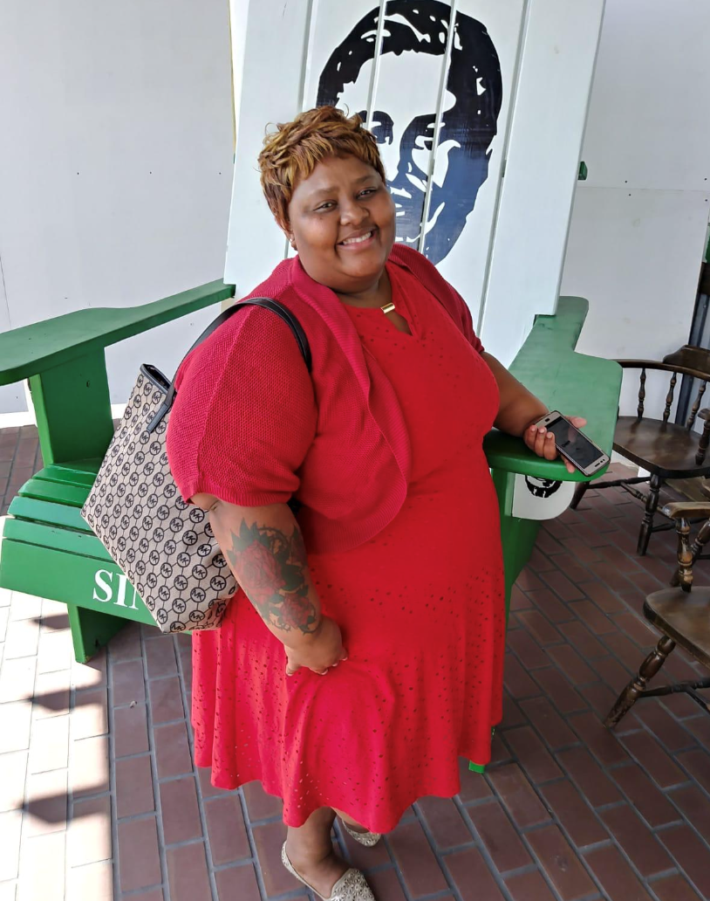
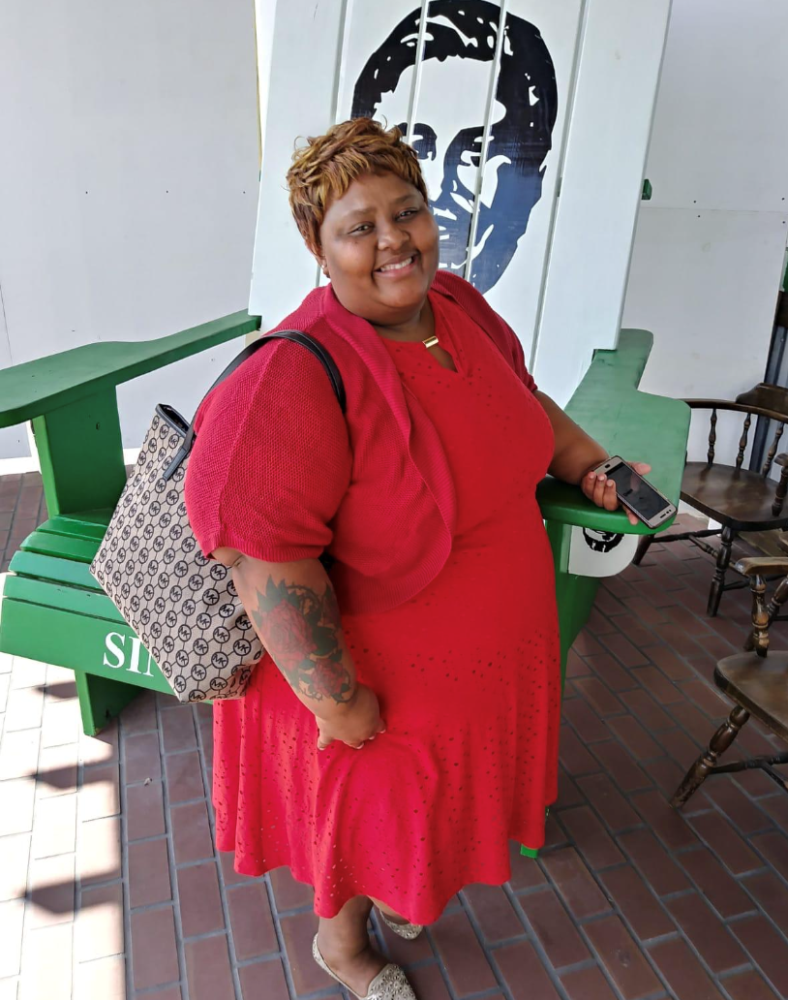
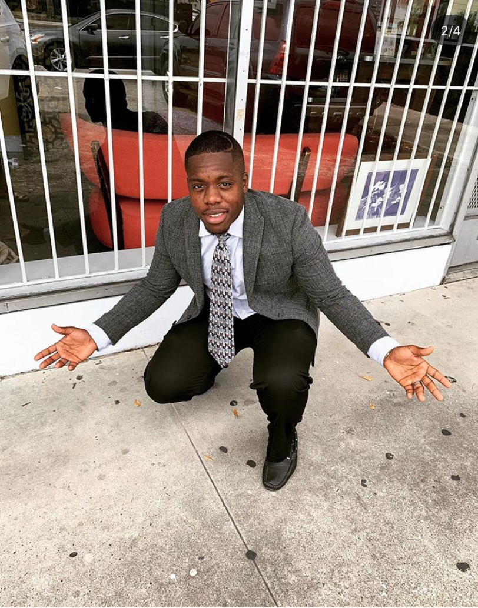
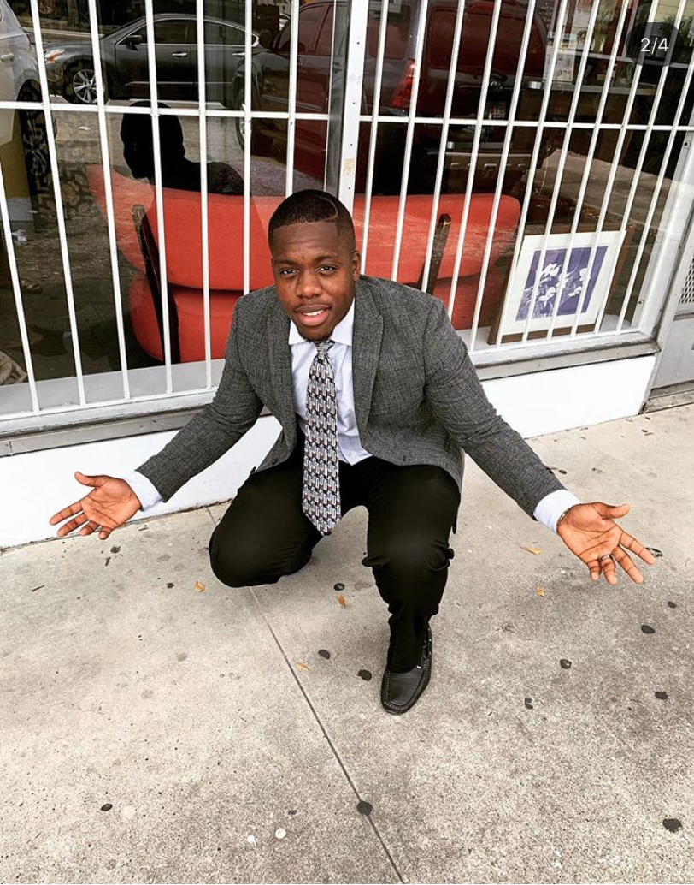

President
As President I oversee all ministry programs directed specifically within the Youth. I lead in the development, coordinatation and lead of all church youth activities.
Contact
Vice President
Being second in command, I assist in all of the roles of the president while also maintaining control over certain ministries like the Mens Ministries. While also being a guide to others.
Contact 

Secretary
I typically handle all the scheduling of events, attendance, and records of things that are going to happen and things that have already happened. While assiting where it sees fit.
ContactChior Director
I am the overseer of the chior. I plan meetings, teach and practice with the team. I am the lead when performing at events and in house, directing the notes and the sequence of the songs.
ContactTreasurer/Advisor
I assist with the youth treasury, while also being an advisor on college and financial dealings. I carry a seat in the decision making when there are any changed within the youth.
Contact

Youth Preacher
My roles include being the preacher for the youth while also teaching other preachers. When Im not doing that playing the guitar for the directors is my passion.
Contact

Praise Team Leader
As praise team leader, I guide, teach and sing with those chosen to be apart of the group. I also assit in the treasury department for the youth and the main church.
Contact

Counselor
I assist where ever is needed within the church. When I am on my free time I am as a counselor to those going through tough times and serious issues.
Contact
Advisor/Planner
When the youth decideds to take a trip I am usually the one on duty making the arrangements. I also help other with financial decisions and life advice.
Contact 

Youth Male Coulselor
As counselor, it became my duty to always check on the men youth on a personal level to make sure we can get to the root of any problems. On my free time I also play the drums.
Contact
Youth Women Counselor
I am an ear that will listen so the women can having someone to confide in and trust. I keep tabs and check up on the women of the youth to make sure there is always help through tough times.
Contact
Lead Treasurer
As lead, I maintain control and advise with the financial decision of the youth. Planning fundraisers and events are ways we benefit in making money for the youth.
ContactTransportation Lead
I am responisble for taking and bring the youth back and forth from the church. I manage the schedules of who is driving the bus and when people need to be picked up.
Contact